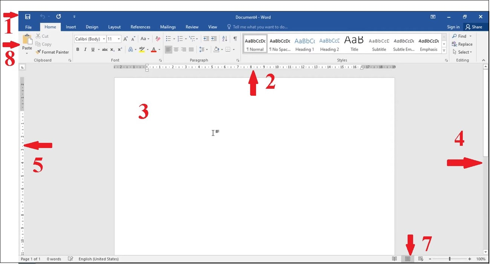

Giới thiệu cơ bản về Word
 Microsoft Word là chương trình soạn thảo, xử lý văn bản phổ biến với tất cả mọi người dùng máy tính trên toàn thế giới, được phát triển bởi Microsoft và thuộc bộ ứng dụng Microsoft Office.
Microsoft Word là chương trình soạn thảo, xử lý văn bản phổ biến với tất cả mọi người dùng máy tính trên toàn thế giới, được phát triển bởi Microsoft và thuộc bộ ứng dụng Microsoft Office.
Thông qua các công cụ định dạng Microsoft Word giúp bạn tạo ra các tài liệu có chất lượng chuyên nghiệp một cách hiệu quả.
Kỹ năng tin học văn phòng word giúp:
Soạn thảo văn thô, chỉnh sửa phông chữ, màu sắc, kích thước,…
Hơn nữa càng về sau, các hệ điều hành của Word còn có thêm các chức năng như: tạo hình ảnh đồ họa, phát triển các ứng dụng đa phương tiện như video, âm thanh, hình ảnh.
Ngoài ra, Word còn có thêm chức năng chỉnh sửa chính tả, ngữ pháp của văn bản khiến công việc của bạn trở nên thuận tiện hơn.
Vì vậy dù bạn có là bất cứ ai, bạn là một giáo viên, một nhân viên văn phòng, người quản lý, thiết kế, sinh viên cần làm luận văn, thuyết trình bài tập… bạn đều cần đến Word.
Công cụ soạn thảo này giúp bạn soạn thảo những công văn, thông báo, ý kiến, bài giảng chiếu,… Phần mềm Word còn hỗ trợ tạo các file văn bản thành dạng PDF để bạn có thể xem trên nhiều thiết bị nội dung số khác nhau
Những tính năng cơ bản của Microsoft Word
- Tiết kiệm thời gian với Researcher
- Sử dụng Accessibility Checker
- Chèn video trực tuyến
- So sánh hoặc gộp tài liệu
- Chèn Smart Chart
- Nghe đọc văn bản
- Cá nhân hóa Word với các tùy chọn nâng cao
- Tùy chỉnh thanh trạng thái
Cấu trúc của một trang Word
- 1. Thanh công cụ truy cập nhanh: Chứa các lệnh thường sử dụng
- 2. Thước ngang: Dùng để định dạng, canh lề, canh ngang, đặt tab,...
- 3. Vùng soạn thảo văn bản: Là nơi nhập nội dung văn bản.
- 4. Thanh cuộn dọc: Dùng để cuộn văn bản theo chiều đứng, xem phần văn bản nào bị che khuất.
- 5. Thước dọc: Dùng để căn chỉnh lề trên, lề dưới của văn bản.
- 6. Thanh cuộn ngang: Dùng để cuộn văn bản theo chiều ngang.
- 7. Thanh trạng thái: Cho biết thông tin về trang hiện hành, tổng số trang trong tài liệu, dòng cột hiện hành,...
- 8. Giao diện Ribbon: Liệt kê các chức năng của word, các chức năng được gom lại thành từng nhóm (group) và được đặt trong các tab (thẻ) khác nhau